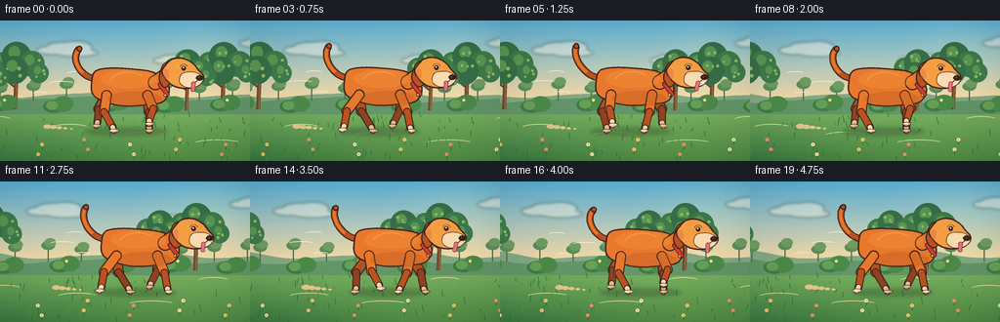
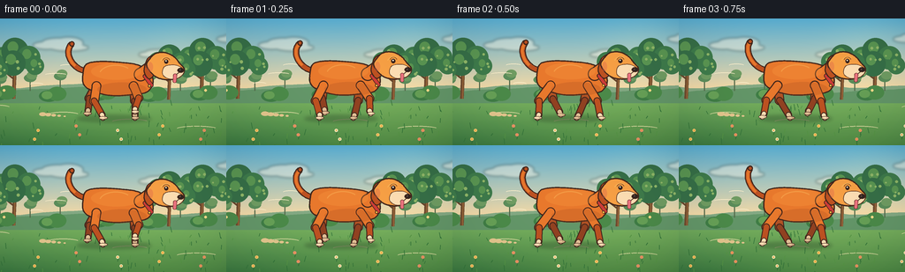
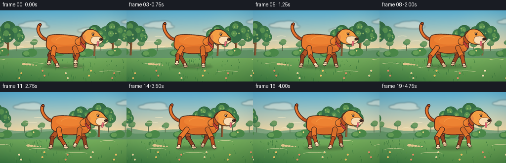
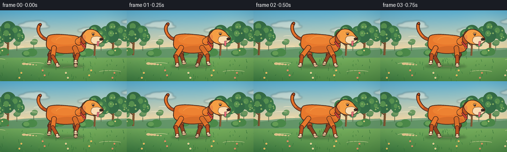

CODING AGENTS AS PIXEL WORLD MODELS
traex/DeepSeek-V4.1-Flash · instance_preservation_0000
点击播放 · 原生 RGB 像素
逐轮保存的候选
回放视频、检查图与代码变化。
每份候选均可单独播放。实际图片检查记录在下方工具轨迹中。
候选 01播放与检查图
点击播放 · 原生 RGB 像素

展开代码变化
--- 上一保存版本
+++ 本次保存版本
@@ -0,0 +1,693 @@
+"""Procedurally generate a five-second RGB video of an orange dog running."""
+
+from __future__ import annotations
+
+import math
+import random
+import shutil
+import subprocess
+from pathlib import Path
+
+import numpy as np
+from PIL import Image, ImageDraw, ImageFilter
+
+import artifact_io
+
+
+ROOT = Path(__file__).resolve().parent
+WIDTH = 256
+HEIGHT = 144
+FRAMES = 20
+FPS = 4.0
+SS = 4
+W = WIDTH * SS
+H = HEIGHT * SS
+
+SKY_TOP = np.array([91, 180, 218], dtype=np.float32)
+SKY_BOTTOM = np.array([250, 220, 166], dtype=np.float32)
+GRASS_TOP = np.array([128, 184, 100], dtype=np.float32)
+GRASS_BOTTOM = np.array([57, 122, 66], dtype=np.float32)
+
+OUTLINE = (66, 39, 29, 255)
+ORANGE = (233, 121, 45, 255)
+ORANGE_LIGHT = (249, 161, 69, 255)
+ORANGE_DARK = (190, 82, 34, 255)
+ORANGE_FAR = (178, 83, 38, 255)
+CREAM = (255, 224, 181, 255)
+CREAM_FAR = (229, 193, 151, 255)
+RED = (207, 61, 57, 255)
+PINK = (238, 116, 128, 255)
+
+
+def px(value: float) -> int:
+ return int(round(value * SS))
+
+
+def xy(point: tuple[float, float]) -> tuple[int, int]:
+ return px(point[0]), px(point[1])
+
+
+def box(coords: tuple[float, float, float, float]) -> tuple[int, int, int, int]:
+ return tuple(px(v) for v in coords)
+
+
+def catmull_closed(points: list[tuple[float, float]], samples: int = 14) -> list[tuple[float, float]]:
+ out: list[tuple[float, float]] = []
+ count = len(points)
+ for i in range(count):
+ p0 = points[(i - 1) % count]
+ p1 = points[i]
+ p2 = points[(i + 1) % count]
+ p3 = points[(i + 2) % count]
+ for j in range(samples):
+ t = j / samples
+ t2 = t * t
+ t3 = t2 * t
+ x = 0.5 * (
+ 2 * p1[0]
+ + (-p0[0] + p2[0]) * t
+ + (2 * p0[0] - 5 * p1[0] + 4 * p2[0] - p3[0]) * t2
+ + (-p0[0] + 3 * p1[0] - 3 * p2[0] + p3[0]) * t3
+ )
+ y = 0.5 * (
+ 2 * p1[1]
+ + (-p0[1] + p2[1]) * t
+ + (2 * p0[1] - 5 * p1[1] + 4 * p2[1] - p3[1]) * t2
+ + (-p0[1] + 3 * p1[1] - 3 * p2[1] + p3[1]) * t3
+ )
+ out.append((x, y))
+ return out
+
+
+def bezier(points: list[tuple[float, float]], samples: int = 32) -> list[tuple[float, float]]:
+ result: list[tuple[float, float]] = []
+ for i in range(samples + 1):
+ t = i / samples
+ u = 1.0 - t
+ x = u**3 * points[0][0] + 3 * u * u * t * points[1][0] + 3 * u * t * t * points[2][0] + t**3 * points[3][0]
+ y = u**3 * points[0][1] + 3 * u * u * t * points[1][1] + 3 * u * t * t * points[2][1] + t**3 * points[3][1]
+ result.append((x, y))
+ return result
+
+
+def capsule(
+ draw: ImageDraw.ImageDraw,
+ p1: tuple[float, float],
+ p2: tuple[float, float],
+ width: float,
+ fill: tuple[int, int, int, int],
+ outline: tuple[int, int, int, int] | None = OUTLINE,
+ outline_width: float = 1.25,
+) -> None:
+ if outline is not None:
+ wide = width + outline_width * 2
+ draw.line([xy(p1), xy(p2)], fill=outline, width=px(wide))
+ draw.ellipse(
+ (px(p1[0] - wide / 2), px(p1[1] - wide / 2), px(p1[0] + wide / 2), px(p1[1] + wide / 2)),
+ fill=outline,
+ )
+ draw.ellipse(
+ (px(p2[0] - wide / 2), px(p2[1] - wide / 2), px(p2[0] + wide / 2), px(p2[1] + wide / 2)),
+ fill=outline,
+ )
+ draw.line([xy(p1), xy(p2)], fill=fill, width=px(width))
+ draw.ellipse(
+ (px(p1[0] - width / 2), px(p1[1] - width / 2), px(p1[0] + width / 2), px(p1[1] + width / 2)),
+ fill=fill,
+ )
+ draw.ellipse(
+ (px(p2[0] - width / 2), px(p2[1] - width / 2), px(p2[0] + width / 2), px(p2[1] + width / 2)),
+ fill=fill,
+ )
+
+
+def smooth_shape(
+ draw: ImageDraw.ImageDraw,
+ points: list[tuple[float, float]],
+ fill: tuple[int, int, int, int],
+ outline: tuple[int, int, int, int] | None = OUTLINE,
+ outline_width: float = 1.25,
+ samples: int = 14,
+) -> list[tuple[float, float]]:
+ smooth = catmull_closed(points, samples)
+ polygon = [xy(p) for p in smooth]
+ draw.polygon(polygon, fill=fill)
+ if outline is not None:
+ draw.line(polygon + [polygon[0]], fill=outline, width=px(outline_width), joint="curve")
+ return smooth
+
+
+def background_base() -> Image.Image:
+ horizon = 82.0
+ yy = np.arange(H, dtype=np.float32)[:, None] / SS
+ xx = np.arange(W, dtype=np.float32)[None, :] / SS
+ sky_t = np.clip(yy / horizon, 0.0, 1.0)
+ sky = SKY_TOP[None, None, :] * (1.0 - sky_t[..., None]) + SKY_BOTTOM[None, None, :] * sky_t[..., None]
+
+ ground_t = np.clip((yy - horizon) / (HEIGHT - horizon), 0.0, 1.0)
+ ground = GRASS_TOP[None, None, :] * (1.0 - ground_t[..., None]) + GRASS_BOTTOM[None, None, :] * ground_t[..., None]
+
+ # Soft low-frequency sunlight keeps the meadow painterly rather than flat.
+ sun_glow = np.exp(-((xx - 216.0) ** 2 + (yy - 33.0) ** 2) / (2 * 33.0**2))
+ ground_wash = np.exp(-((xx - 186.0) ** 2) / (2 * 92.0**2)) * np.clip((yy - 78.0) / 64.0, 0, 1)
+ ground = ground + np.array([26.0, 21.0, 5.0])[None, None, :] * ground_wash[..., None]
+ sky = sky + np.array([16.0, 11.0, 3.0])[None, None, :] * sun_glow[..., None]
+
+ image = np.empty((H, W, 3), dtype=np.float32)
+ image[:] = sky
+ mask = np.broadcast_to(yy >= horizon, (H, W))
+ image[mask] = ground[mask]
+ return Image.fromarray(np.clip(image, 0, 255).astype(np.uint8), "RGB").convert("RGBA")
+
+
+def draw_clouds(image: Image.Image, scroll: float) -> None:
+ cloud_layer = Image.new("RGBA", image.size, (0, 0, 0, 0))
+ draw = ImageDraw.Draw(cloud_layer, "RGBA")
+ clouds = [
+ (31, 22, 1.00, 0.13),
+ (142, 35, 0.70, 0.09),
+ (235, 16, 0.86, 0.12),
+ ]
+ for base_x, y, scale, speed in clouds:
+ x = ((base_x - scroll * speed + 90) % 330) - 55
+ color = (255, 249, 232, 115)
+ draw.ellipse(box((x - 18 * scale, y, x + 18 * scale, y + 9 * scale)), fill=color)
+ draw.ellipse(box((x - 29 * scale, y + 4 * scale, x + 3 * scale, y + 13 * scale)), fill=color)
+ draw.ellipse(box((x - 5 * scale, y - 1 * scale, x + 28 * scale, y + 12 * scale)), fill=color)
+ draw.ellipse(box((x - 10 * scale, y + 7 * scale, x + 34 * scale, y + 15 * scale)), fill=color)
+ cloud_layer = cloud_layer.filter(ImageFilter.GaussianBlur(px(1.4)))
+ image.alpha_composite(cloud_layer)
+
+
+def hill_polygon(draw: ImageDraw.ImageDraw, y_base: float, amplitude: float, phase: float, color: tuple[int, ...]) -> None:
+ points = []
+ for x in range(-8, WIDTH + 12, 4):
+ y = y_base + math.sin(x * 0.034 + phase) * amplitude + math.sin(x * 0.071 + phase * 1.7) * amplitude * 0.35
+ points.append(xy((x, y)))
+ points.extend([xy((WIDTH + 12, 96)), xy((-8, 96))])
+ draw.polygon(points, fill=color)
+
+
+def draw_distant_landscape(image: Image.Image, scroll: float) -> None:
+ draw = ImageDraw.Draw(image, "RGBA")
+ hill_polygon(draw, 75, 3.6, 0.7 - scroll * 0.012, (132, 170, 132, 255))
+ hill_polygon(draw, 81, 3.0, 2.1 - scroll * 0.018, (100, 151, 105, 255))
+
+ # A sparse row of muted trees gives depth behind the dog.
+ for i in range(-2, 10):
+ x = i * 34 - (scroll * 0.23) % 34
+ if x < -12 or x > WIDTH + 12:
+ continue
+ h = 12 + (i % 3) * 2
+ draw.line([xy((x, 82)), xy((x, 82 - h))], fill=(86, 108, 76, 220), width=px(1.3))
+ draw.ellipse(box((x - 7, 81 - h - 4, x + 7, 81 - h + 5)), fill=(92, 142, 91, 235))
+ draw.ellipse(box((x - 4, 81 - h - 7, x + 8, 81 - h + 2)), fill=(112, 157, 99, 220))
+
+
+def draw_tree(
+ image: Image.Image,
+ x: float,
+ y_base: float,
+ scale: float,
+ seed: int,
+ scroll_offset: float,
+) -> None:
+ draw = ImageDraw.Draw(image, "RGBA")
+ rng = random.Random(seed)
+ trunk_x = x + math.sin(scroll_offset * 0.07 + seed) * 0.7
+ trunk_top = y_base - 36 * scale
+ draw.line(
+ [xy((trunk_x, y_base)), xy((trunk_x + 1.5 * scale, trunk_top))],
+ fill=(112, 76, 48, 255),
+ width=px(4.1 * scale),
+ )
+ draw.line(
+ [xy((trunk_x + 1.0 * scale, y_base)), xy((trunk_x + 1.7 * scale, trunk_top))],
+ fill=(151, 101, 57, 255),
+ width=px(1.5 * scale),
+ )
+ # Two small branches make the silhouette feel like a real park tree.
+ draw.line(
+ [xy((trunk_x, y_base - 22 * scale)), xy((trunk_x - 10 * scale, y_base - 30 * scale))],
+ fill=(104, 70, 44, 255),
+ width=px(2.2 * scale),
+ )
+ draw.line(
+ [xy((trunk_x + 1, y_base - 27 * scale)), xy((trunk_x + 11 * scale, y_base - 34 * scale))],
+ fill=(104, 70, 44, 255),
+ width=px(2.0 * scale),
+ )
+
+ centers = [
+ (-12, -46, 12),
+ (2, -53, 15),
+ (16, -46, 13),
+ (-2, -39, 14),
+ (24, -37, 10),
+ ]
+ for idx, (dx, dy, radius) in enumerate(centers):
+ jitter_x = rng.uniform(-1.2, 1.2)
+ jitter_y = rng.uniform(-0.8, 0.8)
+ r = radius * scale
+ cx = trunk_x + (dx + jitter_x) * scale
+ cy = y_base + (dy + jitter_y) * scale
+ fill = (55, 112, 72, 255) if idx % 2 else (63, 124, 76, 255)
+ draw.ellipse(box((cx - r, cy - r, cx + r, cy + r)), fill=fill)
+ draw.ellipse(
+ box((cx - r * 0.68 + 2 * scale, cy - r * 0.72, cx + r * 0.24, cy + r * 0.12)),
+ fill=(91, 151, 83, 215),
+ )
+ for _ in range(3):
+ lx = cx + rng.uniform(-r * 0.55, r * 0.65)
+ ly = cy + rng.uniform(-r * 0.50, r * 0.62)
+ lr = rng.uniform(0.9, 1.8) * scale
+ draw.ellipse(box((lx - lr, ly - lr, lx + lr, ly + lr)), fill=(145, 184, 105, 175))
+
+
+def draw_trees(image: Image.Image, scroll: float) -> None:
+ trees = [
+ (16, 91, 1.02, 17),
+ (191, 92, 0.92, 31),
+ ]
+ period = 212
+ for base_x, base_y, scale, seed in trees:
+ for repeat in range(-1, 3):
+ x = base_x + repeat * period - scroll * 0.34
+ if -55 < x < WIDTH + 55:
+ draw_tree(image, x, base_y, scale, seed + repeat, scroll)
+
+
+def draw_bushes(image: Image.Image, scroll: float) -> None:
+ draw = ImageDraw.Draw(image, "RGBA")
+ period = 57
+ for i in range(-1, 7):
+ x = i * period - (scroll * 0.62) % period
+ y = 88 + (i % 2) * 1.6
+ draw.ellipse(box((x - 13, y - 8, x + 9, y + 5)), fill=(64, 126, 70, 245))
+ draw.ellipse(box((x - 3, y - 12, x + 18, y + 4)), fill=(76, 139, 74, 245))
+ draw.ellipse(box((x - 10, y - 7, x + 2, y + 2)), fill=(103, 161, 87, 220))
+ if i % 2 == 0:
+ draw.ellipse(box((x + 3, y - 8, x + 6, y - 5)), fill=(248, 220, 138, 230))
+
+
+def draw_ground_details(image: Image.Image, scroll: float) -> None:
+ draw = ImageDraw.Draw(image, "RGBA")
+ rng = random.Random(74)
+ # Thin, pale tracks establish the dog's forward direction.
+ for i in range(4):
+ y = 100 + i * 8
+ x = ((i * 73 - scroll * 0.83) % 290) - 20
+ draw.arc(box((x, y - 2, x + 32 + i * 5, y + 5)), 198, 335, fill=(232, 226, 169, 75), width=px(0.8))
+
+ for i in range(74):
+ base_x = rng.uniform(0, WIDTH)
+ y = rng.uniform(98, HEIGHT + 5)
+ h = rng.uniform(2.0, 7.0)
+ lean = rng.uniform(-2.0, 2.0)
+ speed = 0.88 + (y - 98) / 90
+ x = (base_x - scroll * speed + 24) % (WIDTH + 48) - 24
+ color = (53, 118, 59, 225) if i % 3 else (87, 151, 70, 225)
+ draw.line([xy((x, y)), xy((x + lean, y - h))], fill=color, width=px(0.85))
+
+ flower_colors = [(252, 237, 192, 245), (255, 205, 115, 245), (238, 142, 116, 240)]
+ for i in range(12):
+ x = ((i * 47 + 11 - scroll * 1.16) % (WIDTH + 30)) - 15
+ y = 122 + (i % 4) * 5
+ draw.line([xy((x, y + 5)), xy((x + 1, y))], fill=(48, 111, 55, 220), width=px(0.8))
+ draw.ellipse(box((x - 1.8, y - 1.8, x + 1.8, y + 1.8)), fill=flower_colors[i % len(flower_colors)])
+ draw.ellipse(box((x - 0.65, y - 0.65, x + 0.65, y + 0.65)), fill=(237, 171, 57, 255))
+
+
+def draw_shadow(image: Image.Image, center_x: float, ground_y: float, scale: float) -> None:
+ layer = Image.new("RGBA", image.size, (0, 0, 0, 0))
+ draw = ImageDraw.Draw(layer, "RGBA")
+ draw.ellipse(
+ box((center_x - 43 * scale, ground_y - 2.6, center_x + 43 * scale, ground_y + 5.0)),
+ fill=(36, 62, 37, 82),
+ )
+ draw.ellipse(
+ box((center_x - 29 * scale, ground_y - 1.0, center_x + 31 * scale, ground_y + 3.2)),
+ fill=(36, 60, 35, 75),
+ )
+ layer = layer.filter(ImageFilter.GaussianBlur(px(1.9)))
+ image.alpha_composite(layer)
+
+
+def draw_tail(
+ image: Image.Image,
+ shift_x: float,
+ shift_y: float,
+ phase: float,
+) -> None:
+ draw = ImageDraw.Draw(image, "RGBA")
+ wag = math.sin(phase + 0.8)
+ points = bezier(
+ [
+ (98 + shift_x, 60 + shift_y),
+ (82 + shift_x, 59 + shift_y),
+ (70 + shift_x + 1.5 * wag, 38 + shift_y),
+ (78 + shift_x + 4.5 * wag, 28 + shift_y + 1.2 * math.cos(phase)),
+ ]
+ )
+ draw.line([xy(p) for p in points], fill=OUTLINE, width=px(7.3), joint="curve")
+ draw.line([xy(p) for p in points], fill=ORANGE_DARK, width=px(5.1), joint="curve")
+ inner = points[10:]
+ draw.line([xy(p) for p in inner], fill=ORANGE, width=px(3.1), joint="curve")
+ tip = points[-1]
+ draw.ellipse(box((tip[0] - 3.0, tip[1] - 3.0, tip[0] + 3.0, tip[1] + 3.0)), fill=OUTLINE)
+ draw.ellipse(box((tip[0] - 1.7, tip[1] - 1.7, tip[0] + 1.7, tip[1] + 1.7)), fill=ORANGE_DARK)
+
+
+def draw_leg(
+ image: Image.Image,
+ hip: tuple[float, float],
+ phase: float,
+ front: bool,
+ near: bool,
+ shift_x: float,
+ shift_y: float,
+ ground_y: float,
+) -> None:
+ draw = ImageDraw.Draw(image, "RGBA")
+ hip_x = hip[0] + shift_x
+ hip_y = hip[1] + shift_y
+ swing = math.sin(phase)
+ lift = max(0.0, math.cos(phase))
+ stride = 14.0 if front else 16.0
+ foot_x = hip_x + stride * swing + (1.6 if front else -1.6)
+ foot_y = ground_y - lift * (7.0 if front else 6.0) + 0.8
+ bend = 2.8 if front else -4.5
+ knee_x = (hip_x + foot_x) * 0.5 + bend + 2.1 * math.cos(phase)
+ knee_y = (hip_y + foot_y) * 0.5 - 1.0
+ ankle_x = foot_x - 1.8 * swing
+ ankle_y = foot_y - (3.6 if not front else 3.1)
+
+ if near:
+ upper, lower, sock = ORANGE, ORANGE_DARK, CREAM
+ else:
+ upper, lower, sock = ORANGE_FAR, (146, 66, 34, 255), CREAM_FAR
+
+ capsule(draw, (hip_x, hip_y), (knee_x, knee_y), 8.6, upper, outline_width=1.1)
+ capsule(draw, (knee_x, knee_y), (ankle_x, ankle_y), 5.9, lower, outline_width=1.0)
+ capsule(draw, (ankle_x, ankle_y), (foot_x, foot_y), 4.6, sock, outline_width=0.8)
+
+ paw_w = 6.5 if front else 7.4
+ draw.ellipse(
+ box((foot_x - paw_w * 0.58, foot_y - 1.8, foot_x + paw_w * 0.72, foot_y + 1.7)),
+ fill=OUTLINE,
+ )
+ draw.ellipse(
+ box((foot_x - paw_w * 0.50, foot_y - 1.4, foot_x + paw_w * 0.62, foot_y + 1.25)),
+ fill=sock,
+ )
+ # A tiny dark toe line keeps the paws from merging into the grass.
+ draw.line(
+ [xy((foot_x + 1.8, foot_y - 0.2)), xy((foot_x + 4.1, foot_y + 0.4))],
+ fill=(110, 72, 48, 180),
+ width=px(0.55),
+ )
+
+
+def draw_dog(image: Image.Image, frame: int, phase: float) -> tuple[float, float, float]:
+ draw = ImageDraw.Draw(image, "RGBA")
+ shift_x = frame * 0.92
+ bob = -1.5 * abs(math.sin(phase)) - 0.4 * math.cos(phase * 2.0)
+ shift_y = bob
+ ground_y = 112.0
+
+ # Dust trails behind the paws.
+ for i in range(5):
+ life = ((frame / 6.0) + i / 5.0) % 1.0
+ dx = 73 + shift_x - life * 31
+ dy = ground_y - 1.0 - life * 3.0
+ radius = 1.3 + life * 3.4
+ alpha = int(62 * (1.0 - life) ** 1.4)
+ draw.ellipse(
+ box((dx - radius, dy - radius * 0.55, dx + radius, dy + radius * 0.55)),
+ fill=(230, 200, 143, alpha),
+ )
+
+ draw_tail(image, shift_x, shift_y, phase)
+
+ # Far legs sit behind the torso and use a darker, cooler orange.
+ draw_leg(image, (109, 76), phase + 2.55 + math.pi, False, False, shift_x, shift_y, ground_y)
+ draw_leg(image, (151, 76), phase + math.pi, True, False, shift_x, shift_y, ground_y)
+
+ body_points = [
+ (94, 62),
+ (98, 52),
+ (113, 49),
+ (136, 50),
+ (156, 53),
+ (169, 61),
+ (173, 73),
+ (166, 84),
+ (148, 87),
+ (127, 88),
+ (108, 84),
+ (95, 76),
+ ]
+ body_points = [(x + shift_x, y + shift_y) for x, y in body_points]
+ smooth_shape(draw, body_points, ORANGE, outline_width=1.55)
+
+ draw_leg(image, (109, 77), phase + 2.55, False, True, shift_x, shift_y, ground_y)
+ draw_leg(image, (151, 77), phase, True, True, shift_x, shift_y, ground_y)
+
+ # Neck and red collar connect the large torso to the alert head.
+ capsule(
+ draw,
+ (159 + shift_x, 64 + shift_y),
+ (173 + shift_x, 54 + shift_y),
+ 13.0,
+ ORANGE,
+ outline_width=1.25,
+ )
+ capsule(
+ draw,
+ (164 + shift_x, 66 + shift_y),
+ (171 + shift_x, 76 + shift_y),
+ 3.4,
+ RED,
+ outline_width=0.8,
+ )
+ tag_x = 169 + shift_x
+ tag_y = 77 + shift_y
+ draw.ellipse(box((tag_x - 1.7, tag_y - 1.7, tag_x + 1.7, tag_y + 1.7)), fill=OUTLINE)
+ draw.ellipse(box((tag_x - 1.0, tag_y - 1.0, tag_x + 1.0, tag_y + 1.0)), fill=(250, 193, 75, 255))
+
+ # Floppy ear behind the head, with a small pink inner fold.
+ ear_flop = 1.5 * math.sin(phase - 0.65)
+ ear_points = [
+ (169, 44),
+ (179, 41),
+ (180, 52),
+ (176 + ear_flop, 63),
+ (169 + ear_flop * 0.5, 69),
+ (163, 61),
+ (165, 50),
+ ]
+ ear_points = [(x + shift_x, y + shift_y) for x, y in ear_points]
+ smooth_shape(draw, ear_points, ORANGE_DARK, outline_width=1.25)
+ head_points = [
+ (168, 48),
+ (176, 40),
+ (187, 39),
+ (197, 44),
+ (203, 51),
+ (208, 57),
+ (207, 63),
+ (201, 68),
+ (190, 70),
+ (179, 68),
+ (171, 62),
+ (166, 54),
+ ]
+ head_points = [(x + shift_x, y + shift_y) for x, y in head_points]
+ smooth_shape(draw, head_points, ORANGE_LIGHT, outline_width=1.45)
+
+ muzzle_points = [
+ (186, 55),
+ (197, 53),
+ (205, 56),
+ (208, 61),
+ (203, 67),
+ (192, 69),
+ (184, 64),
+ ]
+ muzzle_points = [(x + shift_x, y + shift_y) for x, y in muzzle_points]
+ smooth_shape(draw, muzzle_points, CREAM, outline=(102, 61, 39, 255), outline_width=0.7)
+
+ # Eye, brow, nose, and a small open smile.
+ eye_x = 188.0 + shift_x
+ eye_y = 49.3 + shift_y
+ draw.ellipse(box((eye_x - 2.3, eye_y - 2.5, eye_x + 2.3, eye_y + 2.4)), fill=(58, 35, 29, 255))
+ draw.ellipse(box((eye_x - 1.1, eye_y - 1.6, eye_x + 0.5, eye_y - 0.1)), fill=(255, 246, 216, 245))
+ draw.arc(
+ box((eye_x - 4.0, eye_y - 4.7, eye_x + 4.3, eye_y + 3.2)),
+ 190,
+ 345,
+ fill=(126, 69, 35, 255),
+ width=px(0.8),
+ )
+
+ nose_x = 204.5 + shift_x
+ nose_y = 59.0 + shift_y
+ draw.ellipse(box((nose_x - 3.9, nose_y - 2.6, nose_x + 3.8, nose_y + 2.8)), fill=OUTLINE)
+ draw.ellipse(box((nose_x - 2.7, nose_y - 1.7, nose_x + 2.7, nose_y + 1.7)), fill=(47, 35, 32, 255))
+ draw.ellipse(box((nose_x - 1.4, nose_y - 1.0, nose_x + 0.1, nose_y + 0.2)), fill=(117, 91, 77, 210))
+ draw.line(
+ [xy((nose_x - 1.3, nose_y + 2.0)), xy((199.5 + shift_x, 64.0 + shift_y)), xy((196.5 + shift_x, 64.1 + shift_y))],
+ fill=OUTLINE,
+ width=px(0.8),
+ joint="curve",
+ )
+
+ tongue_wag = math.sin(phase + 0.4) * 0.8
+ capsule(
+ draw,
+ (198.0 + shift_x, 65.0 + shift_y),
+ (197.2 + shift_x + tongue_wag, 71.2 + shift_y),
+ 3.2,
+ PINK,
+ outline=(115, 54, 50, 255),
+ outline_width=0.55,
+ )
+ # Alpha-blend fine surface details in one pass so they never cut the silhouette.
+ detail = Image.new("RGBA", image.size, (0, 0, 0, 0))
+ detail_draw = ImageDraw.Draw(detail, "RGBA")
+ detail_draw.ellipse(
+ box((103 + shift_x, 51 + shift_y, 160 + shift_x, 70 + shift_y)),
+ fill=(250, 157, 67, 70),
+ )
+ detail_draw.ellipse(
+ box((110 + shift_x, 73 + shift_y, 166 + shift_x, 89 + shift_y)),
+ fill=(156, 70, 31, 55),
+ )
+ detail_draw.ellipse(
+ box((167 + shift_x + ear_flop * 0.3, 50 + shift_y, 173 + shift_x, 61 + shift_y)),
+ fill=(221, 103, 78, 95),
+ )
+ detail_draw.line(
+ [xy((196.2 + shift_x + tongue_wag, 69.2 + shift_y)), xy((198.2 + shift_x + tongue_wag, 69.5 + shift_y))],
+ fill=(190, 73, 83, 150),
+ width=px(0.45),
+ )
+ detail_draw.arc(
+ box((112 + shift_x, 53 + shift_y, 150 + shift_x, 75 + shift_y)),
+ 196,
+ 318,
+ fill=(255, 189, 94, 125),
+ width=px(1.15),
+ )
+ detail_draw.arc(
+ box((181 + shift_x, 44 + shift_y, 196 + shift_x, 56 + shift_y)),
+ 195,
+ 306,
+ fill=(255, 196, 100, 135),
+ width=px(0.9),
+ )
+ image.alpha_composite(detail)
+
+ return shift_x, shift_y, ground_y
+
+
+def draw_speed_lines(image: Image.Image, frame: int, dog_x: float, dog_y: float) -> None:
+ draw = ImageDraw.Draw(image, "RGBA")
+ specs = [
+ (54, 17, 12, 76),
+ (64, 24, 21, 66),
+ (75, 15, 34, 54),
+ ]
+ for index, (y, length, back, alpha) in enumerate(specs):
+ x = dog_x + 68 - ((frame * 4.7 + index * 17) % 42)
+ draw.arc(
+ box((x, dog_y + y - 1.6, x + length, dog_y + y + 1.7)),
+ 186,
+ 346,
+ fill=(255, 241, 205, alpha),
+ width=px(0.85),
+ )
+
+
+def render_frame(frame: int) -> np.ndarray:
+ phase = 2.0 * math.pi * frame / 8.0
+ scroll = frame * 7.4
+ image = background_base()
+ draw_clouds(image, scroll)
+ draw_distant_landscape(image, scroll)
+ draw_trees(image, scroll)
+ draw_bushes(image, scroll)
+ draw_ground_details(image, scroll)
+
+ dog_shift = frame * 0.92
+ bob = -1.5 * abs(math.sin(phase)) - 0.4 * math.cos(phase * 2.0)
+ draw_shadow(image, 129 + dog_shift, 112.4, 0.94 + 0.04 * abs(math.cos(phase)))
+ draw_speed_lines(image, frame, dog_shift, bob)
+ draw_dog(image, frame, phase)
+
+ # Subtle warm vignette and grain-free finish.
+ arr = np.asarray(image.convert("RGB"), dtype=np.float32)
+ yy = np.arange(H, dtype=np.float32)[:, None] / SS
+ xx = np.arange(W, dtype=np.float32)[None, :] / SS
+ vignette = 1.0 - 0.055 * (((xx - 128) / 128) ** 2 + ((yy - 72) / 72) ** 2)
+ arr = np.clip(arr * vignette[..., None], 0, 255).astype(np.uint8)
+ result = Image.fromarray(arr, "RGB").resize((WIDTH, HEIGHT), Image.Resampling.LANCZOS)
+ return np.asarray(result, dtype=np.uint8)
+
+
+def encode_video(frames: np.ndarray, path: Path) -> None:
+ ffmpeg = shutil.which("ffmpeg")
+ if ffmpeg is None:
+ try:
+ import imageio_ffmpeg
+
+ ffmpeg = imageio_ffmpeg.get_ffmpeg_exe()
+ except Exception as exc: # pragma: no cover - only reached without ffmpeg
+ raise RuntimeError("ffmpeg is required to encode the RGB video") from exc
+
+ command = [
+ ffmpeg,
+ "-y",
+ "-loglevel",
+ "error",
+ "-f",
+ "rawvideo",
+ "-pix_fmt",
+ "rgb24",
+ "-s",
+ f"{WIDTH}x{HEIGHT}",
+ "-r",
+ str(FPS),
+ "-i",
+ "-",
+ "-an",
+ "-c:v",
+ "libx264",
+ "-preset",
+ "slow",
+ "-crf",
+ "15",
+ "-pix_fmt",
+ "yuv420p",
+ "-movflags",
+ "+faststart",
+ str(path),
+ ]
+ process = subprocess.run(command, input=frames.tobytes(), check=False, capture_output=True)
+ if process.returncode != 0:
+ raise RuntimeError(process.stderr.decode("utf-8", errors="replace"))
+
+
+def main() -> None:
+ frames = np.stack([render_frame(i) for i in range(FRAMES)])
+ assert frames.shape == (FRAMES, HEIGHT, WIDTH, 3)
+ assert frames.dtype == np.uint8
+
+ artifact_io.save(frames, ROOT)
+ encode_video(frames, ROOT / "video.mp4")
+ print(f"wrote {FRAMES} frames at {WIDTH}x{HEIGHT}, {FPS:g} fps")
+ print(f"video: {ROOT / 'video.mp4'}")
+
+
+if __name__ == "__main__":
+ main()
候选 02播放与检查图
点击播放 · 原生 RGB 像素


展开代码变化
--- 上一保存版本
+++ 本次保存版本
@@ -157,7 +157,7 @@
image[:] = sky
mask = np.broadcast_to(yy >= horizon, (H, W))
image[mask] = ground[mask]
- return Image.fromarray(np.clip(image, 0, 255).astype(np.uint8), "RGB").convert("RGBA")
+ return Image.fromarray(np.clip(image, 0, 255).astype(np.uint8)).convert("RGBA")
def draw_clouds(image: Image.Image, scroll: float) -> None:
@@ -631,7 +631,7 @@
xx = np.arange(W, dtype=np.float32)[None, :] / SS
vignette = 1.0 - 0.055 * (((xx - 128) / 128) ** 2 + ((yy - 72) / 72) ** 2)
arr = np.clip(arr * vignette[..., None], 0, 255).astype(np.uint8)
- result = Image.fromarray(arr, "RGB").resize((WIDTH, HEIGHT), Image.Resampling.LANCZOS)
+ result = Image.fromarray(arr).resize((WIDTH, HEIGHT), Image.Resampling.LANCZOS)
return np.asarray(result, dtype=np.uint8)
候选 03播放与检查图
点击播放 · 原生 RGB 像素


展开代码变化
--- 上一保存版本
+++ 本次保存版本
@@ -610,7 +610,8 @@
def render_frame(frame: int) -> np.ndarray:
- phase = 2.0 * math.pi * frame / 8.0
+ # Six samples per gait cycle gives the 4 fps clip a lively running cadence.
+ phase = 2.0 * math.pi * frame / 6.0
scroll = frame * 7.4
image = background_base()
draw_clouds(image, scroll)
可观测工具轨迹
实际执行的命令与返回图片。
命令 1exit 0
/bin/bash -c "pwd && rg --files -g '"'!*.mp4'"' -g '"'!*.mov'"' | sort | sed -n '1,200p'"
命令 2exit 0
/bin/bash -c "sed -n '1,240p' prompt.txt"
命令 3exit 0
/bin/bash -c "sed -n '1,280p' GENERATION_RULES.md"
命令 4exit 0
/bin/bash -c 'cat task_spec.json'
命令 5exit 0
/bin/bash -c "find . -maxdepth 2 -type f -printf '%p\\t%k KB\\n' | sort | sed -n '1,240p'"
命令 6exit 0
/bin/bash -c "sed -n '1,260p' artifact_io.py"
命令 7exit 0
/bin/bash -c "sed -n '1,260p' player_template.html"
命令 8exit 0
/bin/bash -c "python - <<'PY'
import PIL, numpy
print('PIL', PIL.__version__)
print('numpy', numpy.__version__)
try:
import imageio_ffmpeg; print('imageio_ffmpeg', imageio_ffmpeg.get_ffmpeg_exe())
except Exception as e: print('no imageio_ffmpeg', e)
PY"命令 9exit 1
/bin/bash -c 'python generate.py'
命令 10exit 0
/bin/bash -c "python - <<'PY'
from PIL import Image, ImageDraw
im=Image.new('RGBA',(10,10),(255,0,0,255))
d=ImageDraw.Draw(im,'RGBA')
d.rectangle((2,2,7,7),fill=(0,0,255,100))
print(im.getpixel((4,4)))
im2=Image.new('RGBA',(10,10),(255,0,0,255))
d=ImageDraw.Draw(im2,'RGBA')
d.polygon([(2,2),(7,2),(7,7)],fill=(0,0,0,0))
print(im2.getpixel((5,4)))
PY"命令 11exit 0
/bin/bash -c 'python generate.py'
命令 12exit 0
/bin/bash -c "python - <<'PY'
from PIL import Image
im=Image.open('frames/00.png').convert('RGB')
# ANSI truecolor half-block preview; crop to the dog-centered scene.
im=im.resize((64,36), Image.Resampling.LANCZOS)
for y in range(0,36,2):
row=[]
for x in range(64):
r1,g1,b1=im.getpixel((x,y)); r2,g2,b2=im.getpixel((x,min(y+1,35)))
row.append(f'\\x1b[38;2;{r1};{g1};{b1}m\\x1b[48;2;{r2};{g2};{b2}mâ')
print(''.join(row)+'\\x1b[0m')
PY"命令 13exit 0
/bin/bash -c "python - <<'PY' from PIL import Image for name in ['inspection.png','transition_check.png','frames/00.png','frames/04.png','frames/08.png','frames/12.png']: im=Image.open(name); print(name, im.size, im.mode) PY"
命令 14exit 127
/bin/bash -c 'ffprobe -v error -show_entries stream=codec_name,width,height,r_frame_rate,nb_frames,pix_fmt,duration -of default=noprint_wrappers=1 video.mp4'
命令 15exit 0
/bin/bash -c "du -h video.mp4 pixels.npz index.html inspection.png && ls -la frames | sed -n '1,30p'"
命令 16exit 0
/bin/bash -c "python - <<'PY'
from PIL import Image
im=Image.open('frames/00.png').convert('RGB')
# Classify every 2x2 px in dog region.
def cls(p):
r,g,b=p
if r>175 and 65<g<185 and b<115: return 'O'
if r>205 and g>160 and b>120 and r>g: return 'C'
if r>130 and g<90 and b<75: return 'R'
if r<100 and g<90 and b<75: return '#'
if b>g and b>r: return '.'
if g>r*1.05 and g>b*1.15: return ','
if r>g and r>b: return 'o'
return ' '
for y in range(24,126,2):
row=''
for x in range(70,238,2):
block=[im.getpixel((x+dx,y+dy)) for dx in range(2) for dy in range(2)]
p=tuple(sum(c[i] for c in block)//4 for i in range(3))
row+=cls(p)
print(row.rstrip())
PY"命令 17exit 0
/bin/bash -c 'python generate.py'
命令 18exit 1
/bin/bash -c "python - <<'PY'
import json, subprocess
from pathlib import Path
import numpy as np
from PIL import Image
import imageio_ffmpeg
root=Path('.')
spec=json.loads((root/'task_spec.json').read_text())
frames=np.load(root/'pixels.npz')['pixels']
print('pixels', frames.shape, frames.dtype)
assert frames.shape == (spec['frames'], spec['height'], spec['width'])
# Decode MP4 with the same local ffmpeg binary and verify all 20 RGB frames.
ffmpeg=imageio_ffmpeg.get_ffmpeg_exe()
raw=subprocess.run([ffmpeg,'-v','error','-i','video.mp4','-f','rawvideo','-pix_fmt','rgb24','-'],check=True,capture_output=True).stdout
video=np.frombuffer(raw,dtype=np.uint8).reshape(-1,spec['height'],spec['width'],3)
print('decoded', video.shape, 'duration', len(video)/spec['fps'], 'seconds')
assert len(video)==spec['frames']
diffs=[]
for i in range(1,len(video)):
diffs.append(float(np.abs(video[i].astype(np.int16)-video[i-1].astype(np.int16)).mean()))
print('motion mean abs diff', round(min(diffs),2), round(sum(diffs)/len(diffs),2), round(max(diffs),2))
print('luma range', int(video.min()), int(video.max()))
# Confirm visible orange coverage and a moving dog region.
orange=((video[:,:,:,0]>170)&(video[:,:,:,1]>55)&(video[:,:,:,1]<190)&(video[:,:,:,2]<125))
print('orange px/frame', int(orange.sum(axis=(1,2)).min()), int(orange.sum(axis=(1,2)).max()))
print('artifacts', [(p.name,p.stat().st_size) for p in [root/'video.mp4',root/'pixels.npz',root/'index.html',root/'inspection.png']])
PY"命令 19exit 0
/bin/bash -c "python - <<'PY'
import json, subprocess
from pathlib import Path
import numpy as np
import imageio_ffmpeg
root=Path('.')
spec=json.loads((root/'task_spec.json').read_text())
packed=np.load(root/'pixels.npz')['pixels']
print('pixels', packed.shape, packed.dtype)
assert packed.shape == (spec['height'], spec['width'], spec['frames'])
# Decode MP4 and verify all RGB frames.
ffmpeg=imageio_ffmpeg.get_ffmpeg_exe()
raw=subprocess.run([ffmpeg,'-v','error','-i','video.mp4','-f','rawvideo','-pix_fmt','rgb24','-'],check=True,capture_output=True).stdout
video=np.frombuffer(raw,dtype=np.uint8).reshape(-1,spec['height'],spec['width'],3)
print('decoded', video.shape, 'duration', len(video)/spec['fps'], 'seconds')
assert len(video)==spec['frames']
diffs=[]
for i in range(1,len(video)):
diffs.append(float(np.abs(video[i].astype(np.int16)-video[i-1].astype(np.int16)).mean()))
print('motion mean abs diff min/avg/max', round(min(diffs),2), round(sum(diffs)/len(diffs),2), round(max(diffs),2))
print('luma range', int(video.min()), int(video.max()))
orange=((video[:,:,:,0]>170)&(video[:,:,:,1]>55)&(video[:,:,:,1]<190)&(video[:,:,:,2]<125))
print('orange px/frame min/max', int(orange.sum(axis=(1,2)).min()), int(orange.sum(axis=(1,2)).max()))
print('artifacts', [(p.name,p.stat().st_size) for p in [root/'video.mp4',root/'pixels.npz',root/'index.html',root/'inspection.png']])
PY"命令 20exit 0
/bin/bash -c 'mkdir -p .tmp/candidates && cp video.mp4 .tmp/candidates/candidate_v1.mp4 && cp inspection.png .tmp/candidates/candidate_v1_inspection.png'
命令 21exit 0
/bin/bash -c 'python generate.py'
命令 22exit 0
/bin/bash -c 'cp video.mp4 .tmp/candidates/candidate_v2.mp4 && cp inspection.png .tmp/candidates/candidate_v2_inspection.png'
命令 23exit 0
/bin/bash -c "python - <<'PY'
from PIL import Image
# Measure orange-mask bounding boxes across frames to ensure the dog stays complete in frame.
boxes=[]
for i in range(20):
a=Image.open(f'frames/{i:02d}.png').convert('RGB')
pix=a.load(); xs=[]; ys=[]
for y in range(30,125):
for x in range(55,245):
r,g,b=pix[x,y]
if r>170 and 55<g<190 and b<125:
xs.append(x); ys.append(y)
boxes.append((min(xs),min(ys),max(xs),max(ys)))
print('orange bbox range', min(b[0] for b in boxes), min(b[1] for b in boxes), max(b[2] for b in boxes), max(b[3] for b in boxes))
print('bbox widths', min(b[2]-b[0]+1 for b in boxes), max(b[2]-b[0]+1 for b in boxes))
print('bbox heights', min(b[3]-b[1]+1 for b in boxes), max(b[3]-b[1]+1 for b in boxes))
# Adjacent frame change, averaged over the dog crop only.
import numpy as np
prev=None; changes=[]
for i in range(20):
a=np.asarray(Image.open(f'frames/{i:02d}.png').convert('RGB').crop((60,25,230,120)),dtype=np.int16)
if prev is not None: changes.append(np.abs(a-prev).mean())
prev=a
print('dog-crop motion min/avg/max', round(min(changes),2), round(sum(changes)/len(changes),2), round(max(changes),2))
PY"保存候选 3 份；完成命令 23 次；可验证图片返回 0 张。原始 API 响应与完整日志保留在本地。